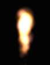
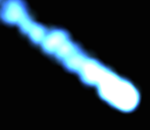
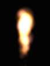
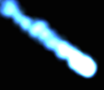
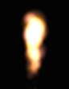
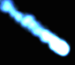
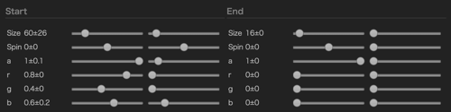
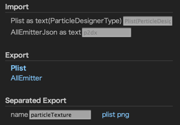

パーティクルは「粒子」の意味です。
ゲーム部品としては、単純な画像を粒子のように大量に動かして爆発や水を表現する技法をいいます。


これらは10-200枚の同じ画像の組み合わせて出来ています。
cocos2dxにもパーティクルがあり、50個前後の設定パラメータと画像をまとめたPList(XML)を呼び出して使います。
C++だとこのように呼び出します。
これで上のようなパーティクルが出ます。
Particle2dxはそのパーティクルを、直感マウス操作とショートカットキーですばやく作ってPListに書き出せるサイトです。
ここからは別WindowでParticle2dxの画面を開きましょう
実際にパーティクルを作ります。
Tキーでテンプレートパネルが開きます。

炎や煙や魔法のテンプレートをここから選択すると、左の画面でパーティクルが動きます。
使うテンプレートが決まったら動きや色を調整して自分のパーティクルにします。
パーティクルが放出される領域をEmitterといいます。英語で「放出領域、放出体」の意味です。
次に色やサイズを変更します。
Cを押してColor&Shapeのパネルを開きます
図形をクリックするとテクスチャ（パーティクルの元の画像）が変わり、同じ動きでも雰囲気が違ってきます。

炎や煙は輪郭のぼやけた画像が向いています。
色パネルをクリックしてみましょう。

パーティクルの色が変わりましたか？
この色は下で説明する「startColor」になります。
炎や煙は輪郭のぼやけた画像が向いています。
particleの粒子それぞれが発生して消えるまでの間は、
startcolorの色、startsizeの大きさ、startSpinの回転から始まって、end〜のそれぞれの値へと色や形が変化します。
色は下のスライダでも変えられます。

スライダは色パネルと違ってRed,Green,Blueといった特定の色だけを変えて行けます。
また、色パネルでは出来ない透明度(Alpha)も変えられます
Mを押してMotionパネルを開きましょう。

duration はEmitterの生存時間です。
2にすると2秒間だけパーティクルを放出して、その後は放出しません。
-1にすると無限に放出します。
爆発など使い捨てるものは0.1など一瞬に設定して、光など存在し続けるものは-1で無制限にしておきましょう。
EmissionRate は一秒間にパーティクルを放出する数です。
一瞬でたくさん放出して消えるような爆発なら1000とか2000とかの数字に、
ゆっくり動いて消えてゆく煙なら10くらいにするとよいでしょう。
lifetimeは放出されたパーティクルの生存時間です。3にすると、それぞれの粒子は放出後3秒して消えます。
cocos2dxのパーティクルはGravityとRadiusの2種類あります。
Motionパネルの中で、GとRキーで切り替えます。
Gravityは中心の四角形（あるいは点）から外側に飛び出すパーティクルです。
Mを押してMotionパネルを開き、Gを押してGravityタイプにします。

３つの四角い領域があります。その四角の中でマウスをドラッグすると、放出方向や早さが変わります。
EmitAreaで指定した四角形の領域から、指定したAngle(角度)に向かって指定のspeedで飛び出したパーティクルは、
gravityの影響で放出後の動きが変わります。
AngleVar（放出角度ばらつき）を180にすると爆発のように全方位に飛び散ります。0にするとローソクのように1方向に放出します。
迫力をつけるには、ここでSpeed、StartSizeを変更します。
MotionパネルでRを押してRadiusタイプにします。

編集のほとんどはGravityタイプと同じです。
Radiusはスライダーだけで編集します。スライダーに合わせて画面に半透明のガイドが出ます。
まずMaxRadiusとMinRadiusで基準の円を決め、その後に、Rotateを決めるとよいでしょう。
Gravityと同じく、AngleVarを変えると1方向になったり全方向に飛び散ったりします。
・動きをちょっと変えて見比べたいとき、D(Duplicate)キーを押すと、現在パーティクルを右上に複製できます。（複製のほうに制御が移ります）
複製されたものを少し変えて見比べ、いらなくなったらRemoveを押して消えましょう。
・編集中パーティクルを一時保存するときはSキーでSnapshotが取れます。画面写真ではなく、現在のパーティクス設定の一時保存です。
画面にS0,S1,S2とマークが出てくるので、それをクリックすると、保存時のパーティクルを呼び戻せます。
・花火を作る例。。Gravityを選び、AngleVarを180にして全方位に放出。
durationを0.1にして一瞬で終了。emissionRateを500にして大量生成。このままでは。
cocos2dxでパーティクルを使うには、plist方式でエクスポートします。
Pを押すと即時ダウンロードになります。

InOut全般の操作は、Iを押してInOutパネルを開きます。
Exportの欄のPlistをクリックするとcocos2dxで使えるplistをダウンロードします。
この場合、テクスチャ画像はgzipした後
AllEmitterをクリックすると、編集中の全Emitterをjsonで出力します。
Separated Exportの欄では、PlistとPNGを別にダウンロードできます。
PListとPNGを入れ込んだ場合、png画像は、gzip圧縮してbase64エンコードされた文字列としてtextureImageDataの欄に入ります。
このサイトから出力したPNG、あるいはParticleDesigner2で出力したPListを読み込めます。
ですが現状ファイルアップロードはないので、テキストとして読み込みます。
Iを押し「InOut」パネルを開きます。
Import欄に、Plistの入力用テキストボックスと、複数パーティクルをまとめたjsonの入力テキストボックスがあります。
テキストエディタで開いたjsonやxmlを貼り付けて、Tabを押すと画面に読み込まれます。
plistを開いた時には現在のスロットで編集中のパーティクルが書き換わります。
複数パーティクルのjsonを開いた時には、編集中のパーティクルが全部消えてjsonの内容に入れ替わります。
少し凝った演出だと、パーティクルを複数重ね合わせることがあります。
大きなものと小さなもの、濃いものと薄いもの、早いものと遅いもの、を重ねます。
A キーを押すとエミッタ2が追加され、炎のパーティクルが出てきます。
何度も押すと次々エミッタが増えていきます。
増えたエミッタは、数字キーで表示を管理できます。
0を押すと全エミッタをoff。1-9でそれぞれのエミッタを選択し、表示させます。
aaaaa012345 と押してみると感覚がつかめると思います。
画面上のEmit1,Emit2のリンクをクリックすると選択、表示、off1,off2を選択すると非表示になります。
Removeで不要なエミッタを削除します。
RemoveOtherをクリックすると選択中以外の全エミッタを削除します。
これらをcocos2dxから使うときには、一つづつPListに出力して呼び出す必要があります。
JavaScript(アプリ) * html5版はplistのpreloadが必要
C++
Lua
・リアルタイムPList更新
・多くのテンプレート。ひながたパーティクルをワンクリックで呼び出し、自分好みに加工できます。
・キーボードショートカット
・WebベースなのでWindowsでもMacでも使えます
・直感的マウス操作
・複数エミッタ編集
・制作中パーティクルをスナップショット保存＆呼び出し
・Plist読み込み
・ParticleDesigner互換のPlist出力